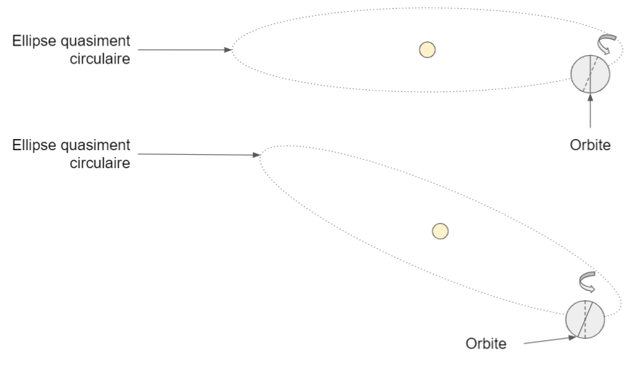
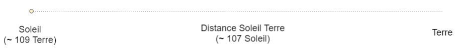
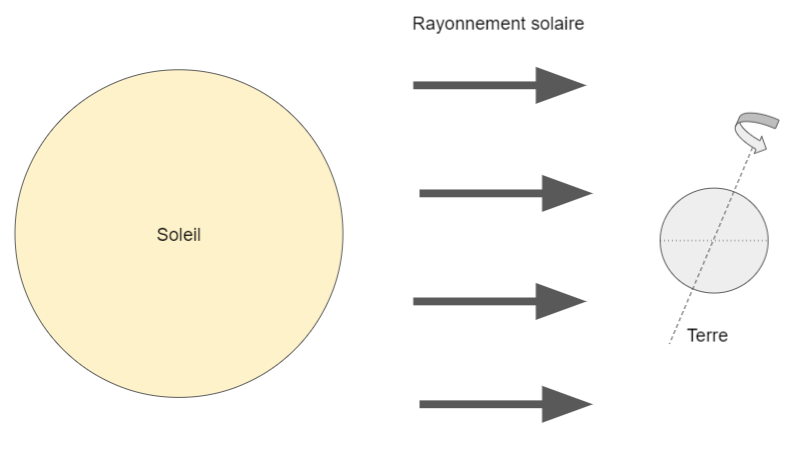
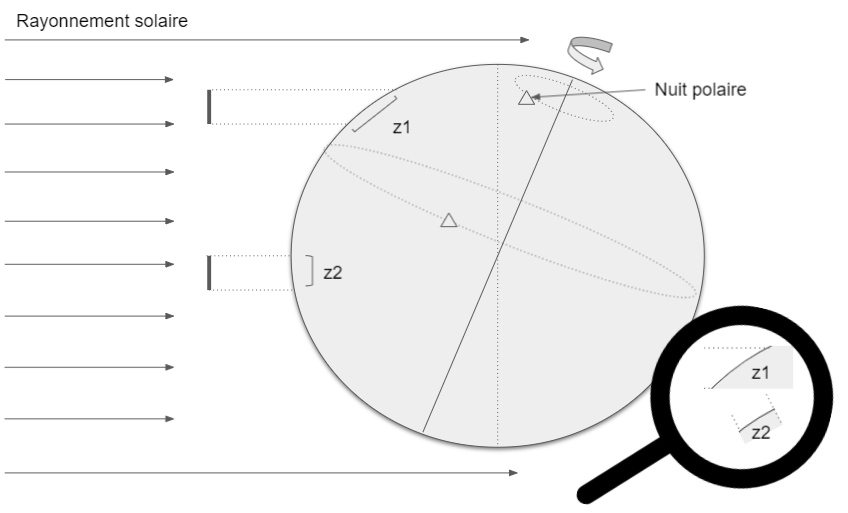

Représentation du temps en Java
Le temps est une notion abstraite dont les propriétés et la définition même échappent à des certitudes absolues. En informatique, la représentation du temps est une problématique récurrente et dont la mise en oeuvre s'avère parfois approximative ou incomplète. Généralement, le passage d'une application ou du SI à une dimension internationale nécessite de se pencher plus en détails sur la manière de concevoir et d'implémenter le temps.
De l'astronomie aux calendriers
Phénomènes astronomiques
Depuis les débuts de l'humanité, l'être humain remarque certaines régularités à différents endroits du globe. En France, le temps peut être ressenti à travers le cycle jour/nuit et les saisons. Ces phénomènes s'expliquent essentiellement par la rotation de la Terre sur elle-même avec une inclinaison par rapport à l'orbite ainsi que par la révolution de la Terre autour du Soleil.
Malgré la différence de taille entre le Soleil et la Terre d'un facteur 100, la distance est tellement élevée entres les deux astres que les rayons lumineux arrivent sur Terre quasiment parallèles. Dès lors, le Soleil éclaire exactement la moitié de la Terre alors que l'autre face ne l'est pas. La lumière visible au crépuscule est due à la diffusion par l'atmosphère terrestre. D'ailleurs, la couleur tire vers l'orange puis le rouge en fonction de la longueur d'atmosphère traversée par la lumière.
Bien que les rayons arrivent parallèlement à la Terre : la variation d'ensolleillement et de chaleur proviennent directement de l'inclinaison de la Terre. Par exemple, sur le schéma x, la quantité d'énergie reçue par les zones z1 et z2 sont identiques. Pourtant, comme la surface z1 est plus grande que la surface z2 alors z1 sera plus chaud que z2. Dans cette configuration, c'est l'été dans l'hémisphère sud et l'hiver dans l'hémisphère nord. Pour terminer, comme la Terre tourne autour du Soleil, les rayons lumineux arriveront vers le côté droit de la Terre sur le schéma et c'est l'inverse qui se produira : ce sera l'étét dans l'hémisphère nord et l'hiver dans la l'hémisphère sud.
   Calendriers solaires
Calendier Julien
Introduit par Jules César, le calendrier Julien est basé sur la position apparente du Soleil et fixe l'année à 365,25 jours. Pour simplifier la partie fractionnaire, le système utilise une base de 365 jours pendant trois ans puis ajoute un jour supplémentaire la quatrième année, dite bissextile : (365*3 + 366)/4 = 365,25 jours. Inspiré du calendrier romain républicain, les jours sont également répartis en douze mois.
Malgré la réforme, un décalage subsiste entre l'équinoxe de printemps calendaire et l'équinoxe réelle en raison de la précession des équinoxes. Ainsi, au 15e siècle, l'équinoxe de printemps se situait vers le 10 mars. En 2021, l'équinoxe de printemps serait tombée le 7 mars. Comme l'équinoxe de printemps est un point de repère pour la date de Pacques, le pape Grégoire XIII a initié l'établissement d'un nouveau calendrier pour corriger la lente dérive.
Calendier Grégorien
Basé sur le calendrier Julien, le calendrier Grégorien modifie la règle de calcul des années bissextiles pour s'approcher davantage de l'année tropique. La nouvelle formule retire trois jours tous les 400 ans : une année est bissextile si elle mutiple de 400, ou bien, mutiple de 4 mais pas de 100. Dès lors, une année vaut en moyenne : 365 + 1*(1/4-1/100+1/400) = 365,2425 jours. Dorénavant, le retard du calendrier Grégorien sur l'année tropique moyenne est de quelques secondes par an. Pour terminer, l'année tropique diminue progressivement au fil des ans.